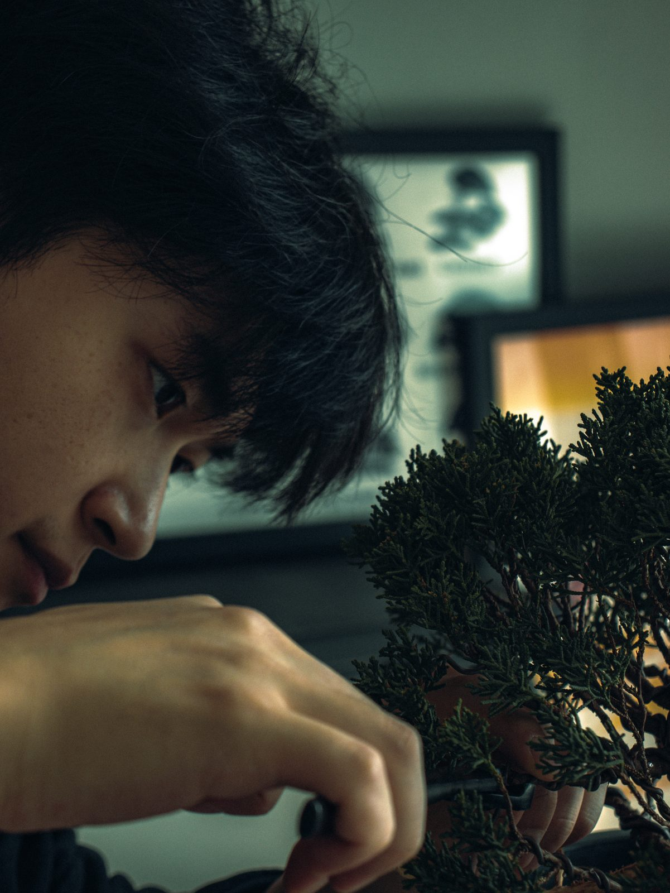
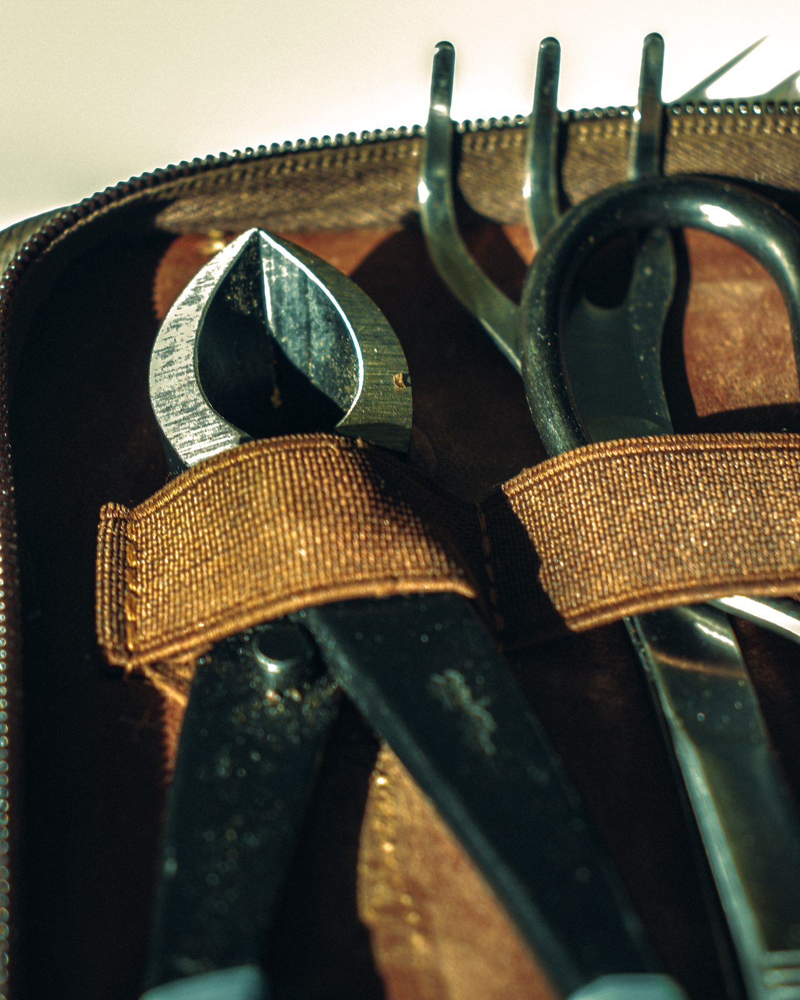
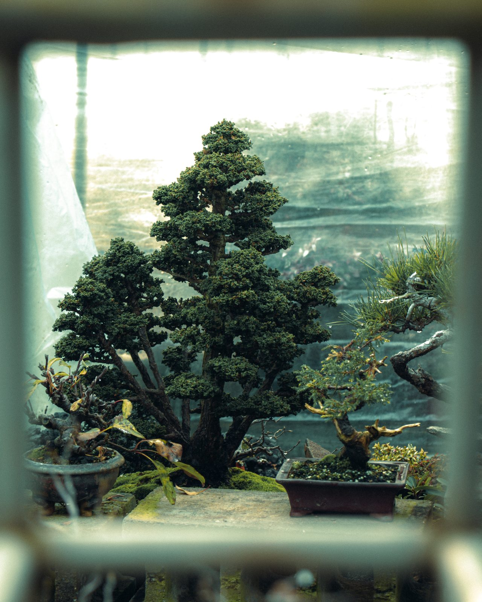

귀연
GUIYEON
분재 작가. 서울에서 작업합니다.

이름
귀연. 거북 귀(龜), 연꽃 연(蓮).
이름에 담은 뜻을 이곳에 적습니다. [확인 필요]
작가의 이름과 브랜드의 이름이 같습니다. 나무에 붙는 이름도 하나입니다.
시작
조경을 공부했습니다. 넓은 땅에 나무를 심는 일이었습니다.
분재를 처음 들인 해와 그 나무의 이야기를 이곳에 적습니다. [확인 필요]
나무를 보는 방식
나무의 방향을 정하기보다 이미 가지고 있는 방향을 찾습니다.
새로 들인 나무는 한 해 동안 자르지 않습니다. 어느 쪽으로 물이 오르고, 어느 가지가 먼저 잎을 내는지 봅니다.
판단은 그다음입니다.


만드는 기준
지금 좋은 것과 나중에 좋은 것이 다를 때는 나중을 택합니다.
더 굵고 잘생긴 가지라도, 남겨 두면 십 년 뒤 나무가 한쪽으로 무너진다면 자릅니다.
죽은 부분은 숨기지 않습니다. 마른 줄기가 살아 있는 줄기를 보여 줍니다.
바쁜 일상 속
느림의 미학
Slow Growth
분재 한 그루를 만드는 데 드는 손의 시간은 며칠입니다. 나머지는 나무의 시간입니다.
그 시간은 줄일 수 없습니다. 철사는 석 달을 두어야 하고, 자른 가지는 한 해가 지나야 새 가지를 냅니다.
빠르게 사는 사람의 책상 위에 느리게 자라는 것이 하나 놓입니다.
Living Art
살아 있는 작품
그림은 완성된 날 멈춥니다. 분재는 완성된 날부터 다시 자랍니다.
그래서 귀연의 작품에는 끝난 날짜가 없습니다. 함께한 해만 적습니다.
작품을 들이신 뒤에도 상태가 이상해 보이면 사진을 보내 주십시오. 봐 드리겠습니다.